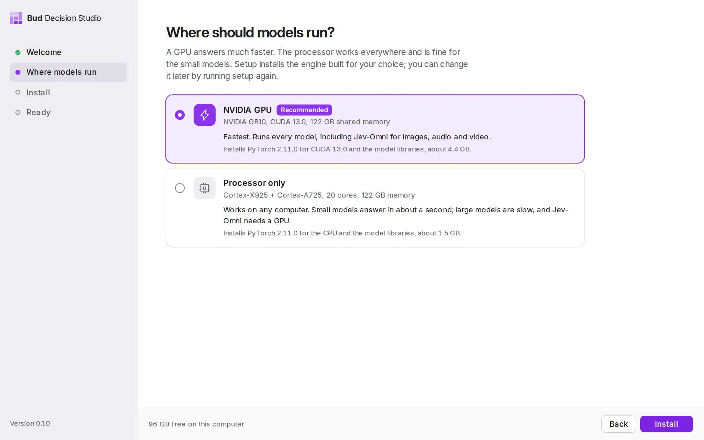

Decisions, not text.
Bud Decision Studio runs open decision models on your own computer. Give a model a situation and a few questions, and it returns a calibrated probability for every answer in about a tenth of a second. No per-call fees, and nothing leaves your machine.
Real answers from Intern-Decision 4B on an NVIDIA GB10, replayed. Each request asks three questions in one pass; the timings are the model's own.
Eleven open models from eight makers
A chat model writes an answer. A decision model weighs every answer.
Your code can't act on a paragraph. A decision model reads a situation and returns the probability of each answer you allowed, so your software gets a number it can act on.
Hi, we were billed twice for March on invoice #4411. Please refund the duplicate today or we will cancel our plan.Which department should handle this?
Chat model
A paragraph to parse, and no way to tell how sure it was.
Decision model
98 ms, one pass. A probability for every option you allowed, and nothing else.
Only the answers you allow
You list the options. The model can't reply with anything else, so every output is something your code already handles.
Every question in one pass
The situation is read once and every option of every question is scored together, in about 100 ms on a GPU.
Honest about doubt
These models are trained to be calibrated: at 90% they should be right about nine times in ten. Evaluate checks that on your own examples.
From situation to action in four steps
The Playground is where every model starts. Write what happened, ask what you need to know, and read each answer as a chart.
-
Describe the situation
An email, a support ticket, a log line, a JSON object. Intern-Decision 4B also reads images, and Jev-Omni reads images, audio and video.
-
Ask typed questions
Choose from six kinds of question and list the answers you'll accept. Several questions can share one situation.
-
Press Decide
The model reads everything once and scores every option at the same time. There is no text to generate and nothing to parse.
-
Act, or ask a person
Pick a threshold. Answers at or above it are safe to act on automatically; the rest go to a human. Drag it to see what changes.
Six kinds of question
Decision models answer three natively; the studio builds the other three from them. Every answer comes back as a full distribution.
Figures 2a to 2f show the shape of each answer with example values.
Everything between your first decision and production
Try a model, compare it with others, measure it on your own examples, save it as a template and review every decision it makes, without leaving the app.
Yours, on your machine
The studio is a desktop app with a local server inside. This is the path every request takes, and all of it stays on your computer.
-
Your codeScripts, services, agents
No per-call fees
Call it a thousand times or a million. The cost is the electricity.
-
Studio server
127.0.0.1:8420Private by default
It listens on this computer only. Other websites can't call it, and History keeps every decision for you to review.
-
One process per modelLaya, Intern-Decision 4B
Eject returns everything
Ejecting a model ends its process and frees every byte. A crash in one model can't take down the studio.
-
GPU or processorChosen during setup
Works offline
Once a model is downloaded it needs no connection. Fonts and assets ship inside the app.
The only thing that comes in: model downloads from Hugging Face, one at a time, smallest first, into the cache your other tools already share.
What never leaves: your situations, your questions and every answer.
Eleven open models, one click each
Weights come straight from each maker's Hugging Face repository. Nothing downloads until you choose; on first run, two that suit your computer are ticked for you.
Results are each maker's own published numbers, compared with TypeSafe's Jev where the maker reports one. Each model keeps its own license; its page in the app links to it.
Runs on the computer you already have
The first time it opens, the studio checks your graphics, processor, memory and free disk, asks where models should run, and installs the matching engine inside its own folder.

NVIDIA GPU
GeForce, RTX, GB10 and DGX Spark, data-centre cards
CUDA 12.6, 12.8 or 13.0, picked from your driverApple Silicon
M1 or newer, macOS 12.3 or later
The Apple GPU, through MetalIntel Core Ultra or Arc
Laptops and desktops with Arc graphics
The Intel GPU (XPU)AMD GPU on Linux
Radeon and Instinct cards
ROCm, experimentalAny other computer
No GPU needed
The processor; small models answer in about a second
Already calling Jev? Change the base URL.
While the app is open, the studio serves TypeSafe's Jev API at 127.0.0.1:8420. The official SDKs and code written for Jev work unchanged, with any of the eleven models.
- Studio API
POST /v1/studio/decisions/v1/studio/templatesRun a saved template with new details. Every decision is kept in History, and templates keep their versions.- TypeSafe Jev API
POST /v1/systemoneGET /v1/modelsThe officialtypesafe-sdkand@typesafe-ai/sdkwork as they are.- OpenRouter Decisions
POST /api/alpha/decisionsPOST /api/v1/systemone- Vercel AI Gateway
POST /typesafe/v1/systemoneGET /typesafe/v1/modelsPOST /v1/evaluate
Every endpoint also takes the pick-any, put-in-order and estimate-a-number questions, images, audio and video in "media", and a calibration temperature. Send X-Basal-Extensions: 1 to get each answer's decision, probabilities and latency too.
API referenceCall the studio from your codeMove from Jev
Tested against TypeSafe's published schema, both official SDKs and OpenRouter's schema: 14 of 14 checks pass. End to end, all six question types on all eleven models: 21 of 21.
Download Bud Decision Studio
The app is small. The engine and the models you choose download on first run, matched to your hardware.
Choose your computer
Pick a download from the list below.
curl -fsSL https://raw.githubusercontent.com/BudEcosystem/Bud-Decision-Engine/main/get.sh | sh
Downloads the right build, installs it and opens the app.
After downloading
Requirements
- macOS 12.3 or later on Apple Silicon. Intel Macs aren't supported by PyTorch.
- Windows 10 or 11 on x64.
- Linux on x64 or ARM64 with WebKitGTK 4.1, such as Ubuntu 22.04 or newer.
- Disk for the models you pick, from 0.6 GB to 24 GB each.
Questions, answered
Something else? Open an issue on GitHub.
What is a decision model?
A model that returns probabilities instead of text. You give it a situation, such as an email, a log line or a JSON object, and typed questions with the answers you allow. It returns the probability of each answer in one fast pass. TypeSafe's Jev made the idea popular; the studio runs open models built in the same spirit, often called "System One" models.
Do I need a GPU?
No. Every model except Jev-Omni runs on the processor, and the small ones (Julia 1, Laya, GLiNER2.5 Decide) answer in about a second. A GPU makes the 4B and 8B models fast: on an NVIDIA GB10, Intern-Decision 4B answers three questions in about 100 ms.
Does anything leave my computer?
Your situations, questions and answers don't. The internet is used to download the engine during setup and the models you choose, from each maker's Hugging Face repository.
macOS says the app is from an unidentified developer.
Right-click the app and choose Open once. Or install with the one-line command, which avoids the warning.
Windows SmartScreen warns about the installer.
Choose More info, then Run anyway. The one-line PowerShell command avoids the warning.
A model won't load.
It usually needs more memory. Eject other models from the sidebar or the System page. Each model's log is on its Models page, under View log.
Downloads are slow.
Hugging Face limits anonymous downloads. Run hf auth login once and restart the app.
Can other machines on my network use it?
Yes, when you choose to. Start the server with --host 0.0.0.0 and set BASAL_API_KEY; clients then send Authorization: Bearer <key>. By default it only listens on the computer it runs on.
Where are the models stored?
In the standard Hugging Face cache, shared with your other tools. A model you already downloaded elsewhere won't be downloaded twice.
Your first decision is a minute away.
Download the app, pick a model, press Decide.
Download Bud Decision Studio